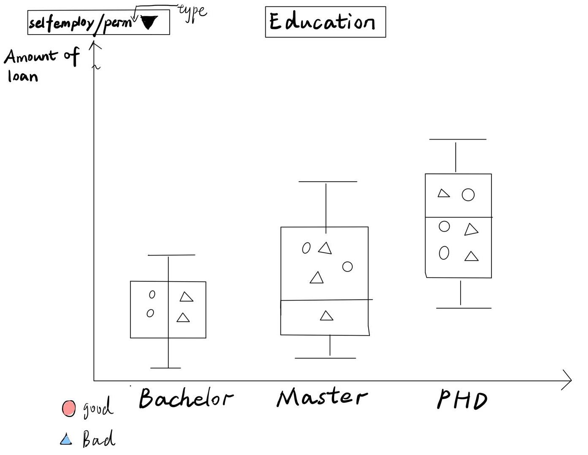
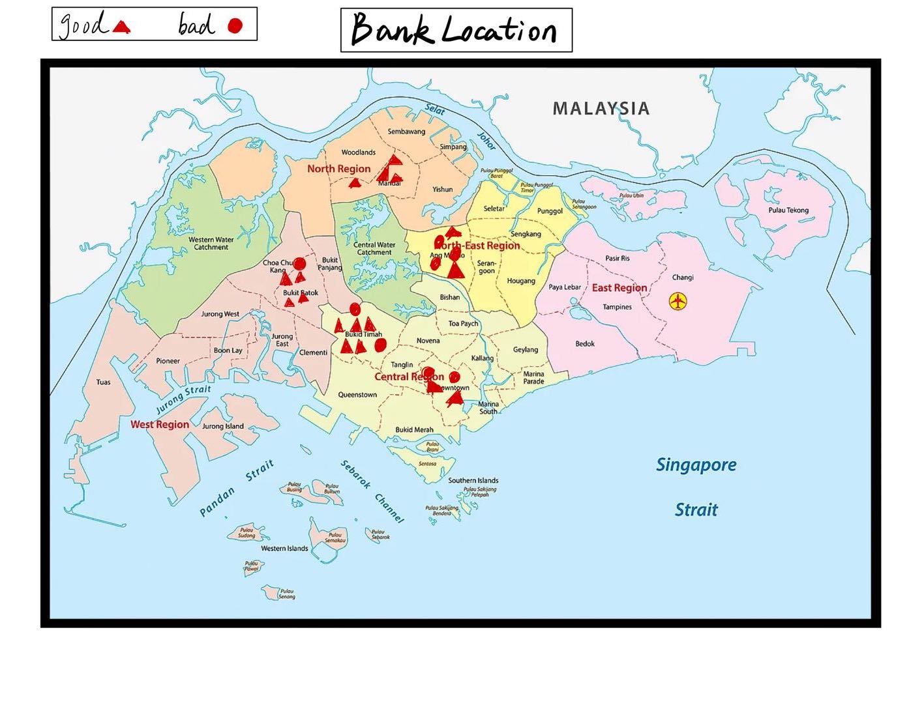
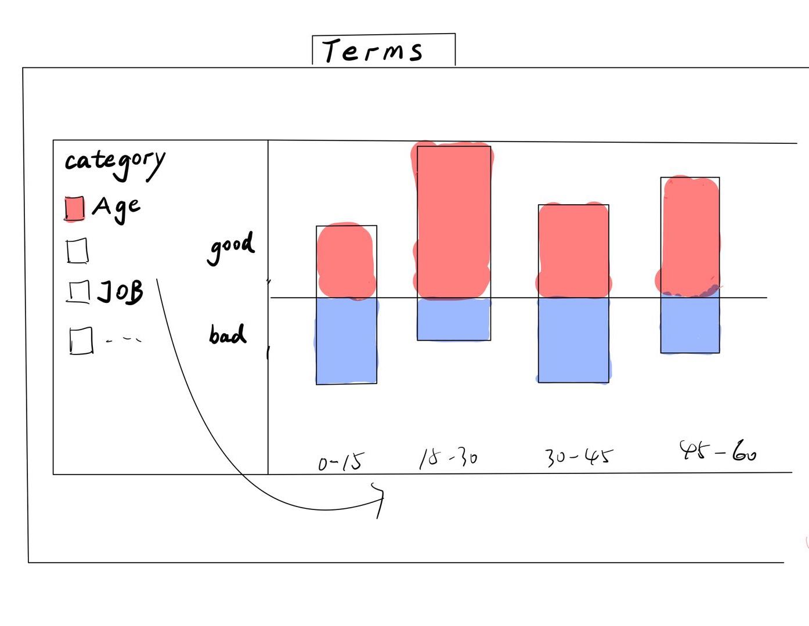
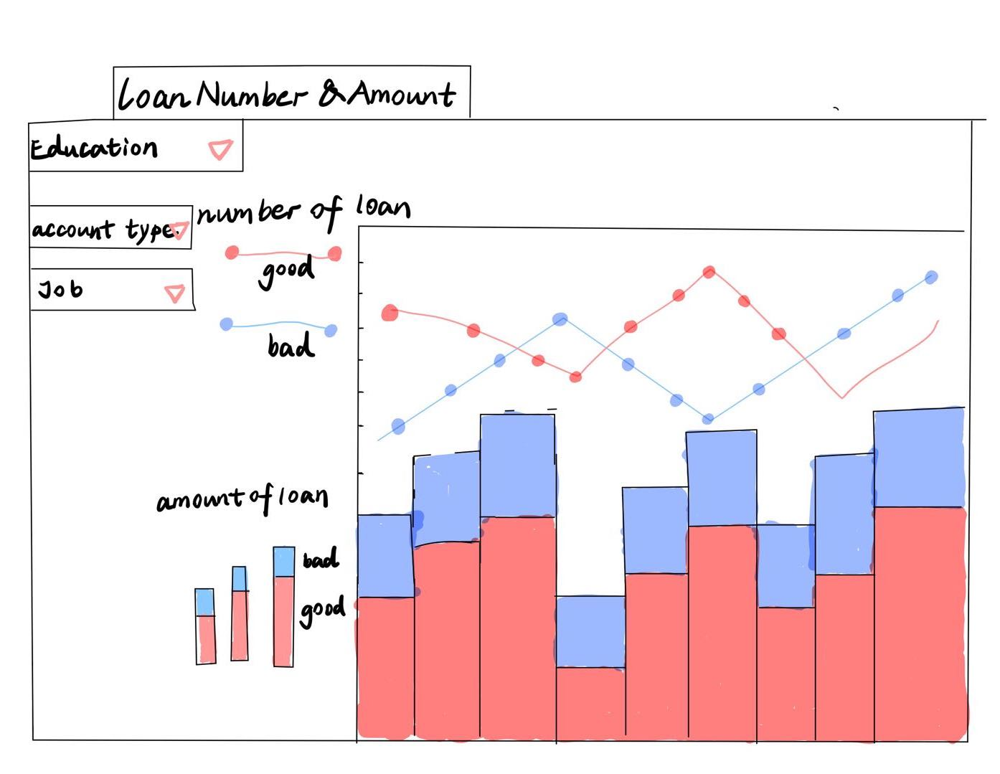

Our Proposal
How to predict who will default on a loan?
Motivation
Providing profitable and high-impact loans to clients are the main business model of SuperLender. But it is necessary to predict the risks of providing loans to clients. Loan default can cause revenue damage. On the contrary, the inaccurate prediction of the risks can also hurt the reputation of company. Therefore, in this project, we focus on load default prediction which can help SuperLender grab the most revenue.
Set the Scenario
SuperLender is a local digital lending company that can provide loans to clients, but if the company could not estimate the property background and do a wrong decision for the clients, it can cause revenue and reputation loss.
Whether to provide loans to clients or not depends on several factors. To make accurate decisions, we need to use statistic tools and visualization tools which requires a bit of coding, such as R, tableau, and shiny.
Based on the huge amount of clients’ background data, we need to explore data and then build the prediction model of loading prediction, which can show us what type of clients fit our business. It can also help us to decide the amount of loan and the time period.
Problem
The team needs to use statistical skills, data processing skills and data visualization skills to do the accurate and reliable data-wrangling of loan data and produce meaningful visualizations to draw useful insights that can reflect useful knowledge.
Based on the historical clients’ loan data and demographic data, the team will focus on the user portrait, which will display the background information depending on the different loan-returning actions.
The team needs to predict the client’s current loan performance, which is based on historical loan data. Here are two situations: The client has returned the previous loan and the client still has the previous loan. The teams need to predict the potential risks and decide whether to allocate the loans, the return period, interest, and amount.
The team aims to build a free website which can be used easily. This website does not require uses to have too much background knowledge and they only need to input several factors, then the website can produce a great visualization and offer decision on loan providing.
Solution
Using various R packages, the team will extract, analyse, and visualize clients’ performance and demographic data. And the team also will build an interactive R shiny application that can directly deliver the insight whether the client can be provided the loan and the amount of the loan and the time period of return.
we would use EDA and clustering techniques to explore the background data of clients , which can help us to display the users’ portraits.
Firstly, we need to know how the previous defaulters look like and which groups they belong to: We use demographic data and previous loans data to identify defaulters and then we divide them into groups. Using birthday data to define age of applications, type of employment to see the occupation of applications, longitude and latitude to see the location of applications, highest education level to define the education level of applications. There is also data of the location of branch which we will use to analyse which branch’s loan is more likely to be defaulted.
Secondly, we will merge the data above to see what the timing characters defaulted loans have. As to the previous loans that customer had prior to the loan that we want to predict the performance, each of them will have a different systemloanid, but the same customer id for each customer. Date that loan application was created to show the creating period, date that the loan was approved to show the approve time, data that was settled to show the settle time, data of first payment due in case where the term is longer than 30 to identify the amount of the loan to show the different loan value, total repayment required to settle to show.
based on the historical loan data, the team will train a model that can predict the load default probability and also can provide the loan amount and the time period of return. Here is two statuses:
(a) If a client has historical loan data but does not have the loan now and they are applying for the loan, the model would predict whether can provide the loan based on the historical loan data(trainprevloans.csv) and show the loan detail information.
(b) If a client has historical loan data and has not returned all yet, the model also can base on the client’s relative data (Performance data and Demographic data) to predict the load default probability and also can provide the loan amount and the time period of return.
Data
There are 3 data sets for train and another 3 for test:
- Demographic data (traindemographics.csv)
- Performance data (trainperf.csv)
- Previous loans data (trainprevloans.csv)
Methodology and Analytic Approach
- Exploratory Data Analysis (EDA) via Data Visualization
For this project, Exploratory Data Analysis (EDA) in the form of visualization techniques will be applied to provide the user portrait.
- Building prediction model’s technique
We would use machine learning related techniques to train a predicted model that can help the company to decide whether provide loans to clients.
Logistic Regression: the case study had provided us with a dataset for loan history along with actual defaults. We were also asked to predict whether a loan is good or bad. From this we can infer that the expected outcome of the analysis is binary. Hence, we choose Logistic Regression to predict if a person will default on the loan in future.
Recursive Partition: As the data set had already provided us the default outcomes based on history record, we can apply a supervised machine learning approach to train the model. Random forest would be applied to train the model.
- R Shiny & Quarto
The team would use R and Shiny to build up an interactive webpage that can show the different statuses of clients and the prediction results directly.
Early Prototype/Storyboard



